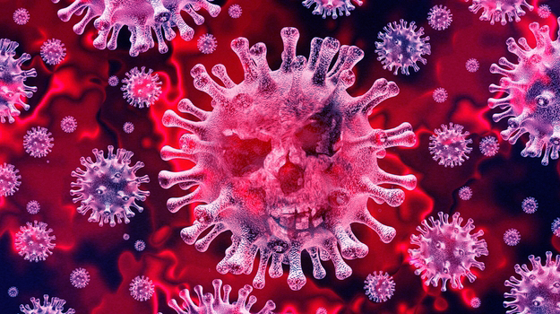
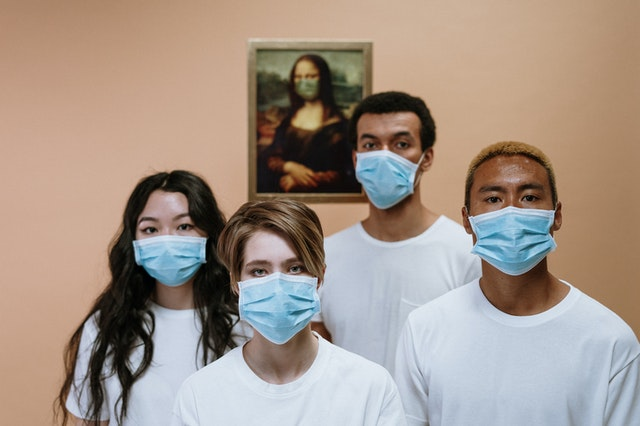
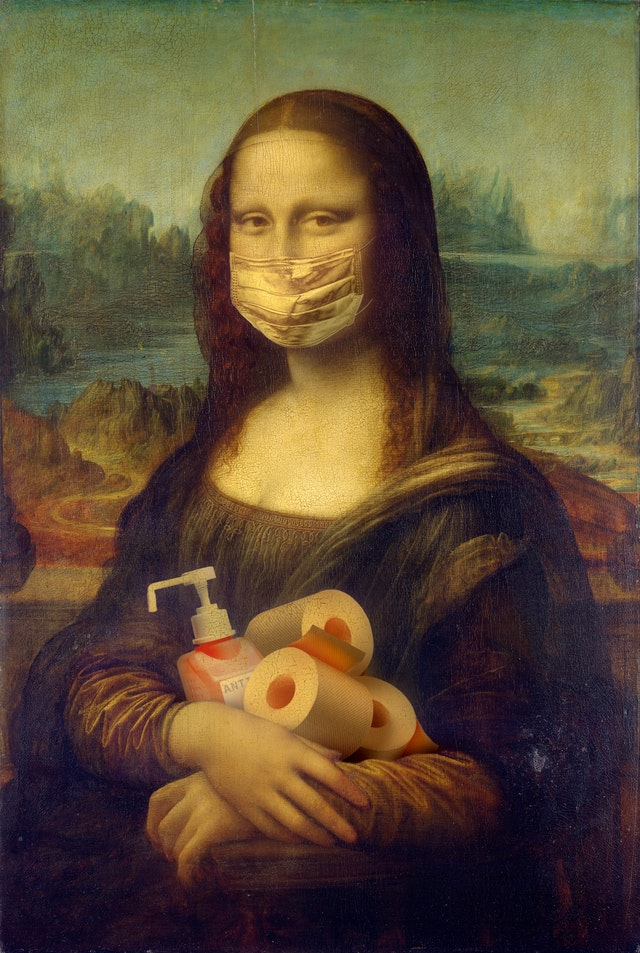

COVID-19
Coronaviruses are a large family of viruses common in many different species of animals, including camels, cattle, cats and bats. Rarely,
coronaviruses that infect animals can infect people, such as MERS-CoV and SARS-CoV. Recently, in December 2019, a new coronavirus (SARS-CoV-2)
was transmitted, which was identified in Wuhan in China and caused a COVID-19, which was then disseminated and transmitted from person to person.
COVID-19 is a disease caused by the coronavirus, called SARS-CoV-2, which has a clinical spectrum ranging from asymptomatic infections to
severe conditions. According to the World Health Organization, the majority (about 80%) of patients with COVID-19 can be asymptomatic or
oligosymptomatic (few symptoms), and approximately 20% of the detected cases require hospital care because they have difficulty breathing,
of which approximately 5% may need ventilatory support.
COVID-19 symptoms
COVID-19 affects different people in different ways. Most infected people will have mild to moderate symptoms of the disease and will not need to be hospitalized. Most common symptoms are: fever, dry cough, tiredness. Less common symptoms: pain and discomfort, sore throat, diarrhea, conjunctivitis, headache, loss of skin or smell, rash on the skin or discoloration of the fingers or toes. Severe symptoms: difficulty breathing or shortness of breath, chest pain or pressure, loss of speech or movement Seek immediate medical attention if you have severe symptoms. Always call before going to the doctor or health center, clinics or hospitals. Healthy people who have mild symptoms should monitor their symptoms at home. On average, symptoms appear after 5 or 6 days after being infected with the virus. However, this can take up to 14 days.
Prevention
The prevention recommendations for COVID-19 are as follows:
Wash your hands frequently up to the wrists with soap and water, or clean them with 70% gel alcohol. This frequency should be increased when you are in a public environment, when using public transport structure or touching surfaces and objects for shared use.
When coughing or sneezing, cover your nose and mouth with a tissue or the inside of your elbow.
Keep a minimum distance of 1 (one) meter between people in public and social places. Avoid hugs, kisses and handshakes.
Frequently sanitize your cell phone, children's toys and other objects that are used frequently.
If you are sick, avoid close contact with other people, especially the elderly and the chronically ill, seek guidance through online channels provided by SUS or attendance at health services and follow the recommendations of the health professional.
The use of masks is recommended in all environments. Fabric masks (homemade / handmade) are not Personal Protective Equipment (PPE), but they can act as a physical barrier, especially against the exit of potentially contaminated droplets.
And as we all imagine, Covid-19 has no treatment or cure, but every day they are running around trying to find a cure.